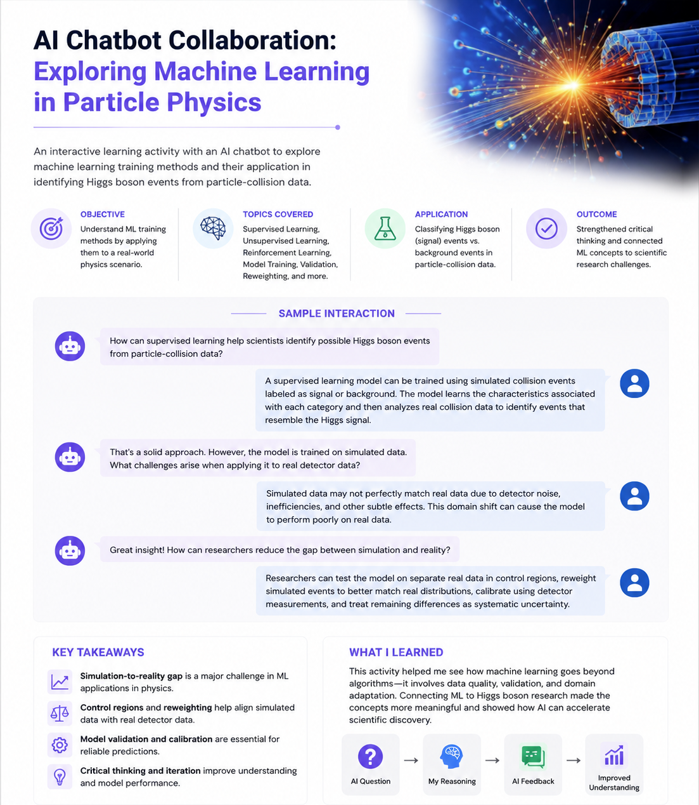

I design and build the cloud-native, AI-powered systems that let regulated organizations bring agentic AI and LLMs into production safely — from LangGraph orchestration and RAG pipelines to the Java/Spring Boot services and Angular UIs that carry them.
I've shipped multi-agent LangGraph orchestration and RAG pipelines into a regulated financial environment — not demos, systems handling 10k+ daily requests with governance and hallucination monitoring built in.
~5 years across Java/Spring Boot microservices, Angular frontends, and cloud infrastructure means I can take an AI capability from a notebook to a real, observable production service.
Prometheus, Grafana, and CloudWatch instrumentation — including LLM-specific monitoring for hallucination risk and bias — so AI systems stay trustworthy in production, not just in testing.
Led Angular architecture decisions, established coding standards through PR review, and mentored developers — improving team velocity by 30% while reducing bug rates.
A self-built, interactive timeline tracing roughly 75 years of artificial intelligence and machine learning history — from Alan Turing's earliest questions about machine intelligence through the generative AI boom of today.
The timeline is organized into three phases: the historical foundations of AI (1930s–1970s), the two "AI winters" when funding and progress stalled, and the deep learning and cloud computing breakthroughs that brought AI into everyday use. It covers milestones including the Turing Test, the Dartmouth Conference, the Perceptron, backpropagation, Deep Blue, AlexNet, the Transformer architecture, and the launch of ChatGPT.
To synthesize scattered historical facts about AI/ML into a single, accessible narrative — building a clear mental model of how the field arrived at today's agentic AI and LLM landscape, and demonstrating the ability to research and communicate technical history to a broad audience.
Researched key dates and events from assigned course readings and a video source, cross-checked against secondary sources (IEEE Computer Society, Our World in Data, Axios), then organized them chronologically into the three eras. Used AI assistance to help gather and organize candidate dates during research; final selection, narrative writing, and timeline design are original.
Unique value: Shows the ability to take a large, technical, decades-spanning subject and distill it into something a non-specialist audience can follow — a skill directly relevant to explaining agentic AI and LLM systems to non-technical stakeholders in regulated industries.
Relevance: Grounds my current work in agentic AI (LangGraph, RAG pipelines) in a clear understanding of how the field's past failures and breakthroughs — the AI winters, the hardware/algorithm gap, the transformer breakthrough — shape what's actually reliable to build today.
Putchuon – "Put You On." (2024). The entire history of artificial intelligence (Last 100 years) [Video]. YouTube.
IEEE Computer Society. (n.d.). The evolution of AI: From foundations to future prospects.
Roser, M., & Our World in Data. (n.d.). The brief history of artificial intelligence.
Axios. (2021). Looking back at Watson's 2011 "Jeopardy!" win.
Fetch.ai. (2024). History of AI: Part four — The boom (80s). Medium.
Wikipedia. (n.d.). Christopher Morcom.
A comparative case study asking a simple question with a not-so-simple answer: when does a problem call for machine learning, and when does it actually need deep learning? Built around two real, contrasting examples — spam detection and autonomous driving — with a real production case study (Waymo) grounding the deep learning side in what's actually running today, not just theory.
The report pairs one classic ML use case (spam filtering, using logistic regression and decision trees) against one DL use case (autonomous driving, using CNNs), and pushes past "here's what each one is" into "here's specifically why this approach wins and the other loses" for each problem — the kind of judgment call that matters more in practice than knowing the definitions.
To differentiate machine learning and deep learning by analyzing real-world applications of each, and to build a clear, defensible argument for why one approach fits a given problem while the other would fall short.
Selected one example each from the course's ML and DL lesson content, then researched a real production case study — Waymo's autonomous vehicle deployment — to ground the deep learning example in current industry practice rather than a textbook description. Used Claude to research current sources and structure the comparative argument, then went through several editing passes: rewriting the analysis in more natural prose instead of a formulaic bullet-list structure, simplifying the visual formatting, and trimming length so the reasoning stayed sharp without padding.
Unique value: Artifact 1 shows the ability to synthesize sprawling historical material into a clear narrative. This one shows something different — the ability to take a live technical tradeoff and argue a side, which is closer to what actually happens in engineering conversations than a neutral summary would be.
Relevance: Deciding when a problem genuinely needs deep learning versus when a simpler, cheaper model will do is a real cost and complexity call in agentic AI and RAG work — not an academic exercise. This artifact is evidence of that judgment, not just knowledge of the definitions.
AIMultiple. (2026). Top 50 Deep Learning Use Case & Case Studies. https://aimultiple.com/deep-learning-applications

View Project Documentation ↗An AI-guided learning activity exploring machine learning training methods through a particle-physics scenario involving Higgs boson event classification.
To apply supervised learning and model-validation concepts to a scientific problem while demonstrating independent reasoning, critical thinking, and clear technical communication.
Responded to progressively challenging chatbot prompts about simulated and real collision data. The discussion examined domain shift, reweighting, detector noise, control regions, calibration, overfitting, and systematic uncertainty. I then revised the interaction into a concise visual document for a professional audience.
Unique value: Demonstrates the ability to move beyond definitions and apply machine learning concepts to a complex scientific scenario.
Relevance: Shows critical thinking about data quality, simulation-to-reality differences, model reliability, and responsible AI-assisted learning.
Open to Senior Full Stack / AI Engineering roles.